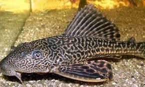

Cascudo:
Cascudo é a designação comum aos peixes siluriformes da família Loricariidae, Os loricariídeos são peixes exclusivamente de água doce. O nome dessa família de peixes vem da palavra "lorica" que se refere a um tipo antigo de armadura em referência ao tipo de escamas desses peixes que formam uma carapaça flexível.Descrição:
Os cascudos caracterizam-se pelo corpo delgado, revestido de placas ósseas, e pela cabeça grande.
Pesca:
Os equipamentos para a pesca esta espécie de peixe deve ser utilizada vara de bambu e uma linha de multifilamento de 0,15, as melhores iscas para essa pesca são as iscas como minhocas, pedaços de peixe ou mortadela.
| Cascudo |
|  |
| Tamanho: 39 cm Peso: 1,5 kg |
Para contratação: Chssilva1419@gmail.com